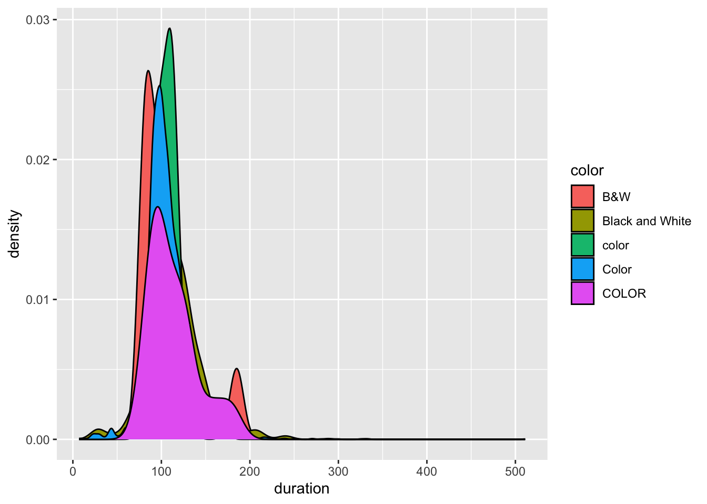

Download the “imdb_5000_messy.csv” file from Moodle
Move it to the data folder you created at the beginning of class
Part b
Hot tip: After saving your data file, it’s important to record appropriate citations and info in either a new Rmd (eg: “imdb_5000_messy_README.Rmd”) or in the Rmd where you’ll analyze the data. These citations should include:
the data source, i.e. where you found the data
the data creator, i.e. who / what group collected the original data
possibly a data codebook, i.e. descriptions of the data variables
To this end, check out where we originally got our IMDB data:
After visiting that website, take some quick notes here on the data source and creator.
Exercise 2: Import the data into RStudio
Now that we have a local copy of our data file, let’s get it into RStudio! Remember that this process depends on 2 things: the file type and location. Since our file type is a csv, we can import it using read_csv(). But we have to supply the file location through a file path. To this end, we can either use an absolute file path or a relative file path.
Part a
An absolute file path describes the location of a file starting from the root or home directory. How we refer to the user root directory depends upon your machine:
On a Mac: ~
On Windows: typically C:\
Then the complete file path to the IMDB data file in the data folder, depending on your machine an where you created your portfolio project, can be:
On a Mac: ~/Desktop/portfolio/data/imdb_5000_messy.csv
On Windows: C:\Desktop\portfolio\data\imdb_5000_messy.csv or C:\\Desktop\\portfolio\\data\\imdb_5000_messy.csv
Putting this together, use read_csv() with the appropriate absolute file path to import your data into RStudio. Save this as imdb_messy.
library(tidyverse)
── Attaching core tidyverse packages ──────────────────────── tidyverse 2.0.0 ──
✔ dplyr 1.1.4 ✔ readr 2.1.5
✔ forcats 1.0.0 ✔ stringr 1.5.1
✔ ggplot2 3.4.4 ✔ tibble 3.2.1
✔ lubridate 1.9.3 ✔ tidyr 1.3.1
✔ purrr 1.0.2
── Conflicts ────────────────────────────────────────── tidyverse_conflicts() ──
✖ dplyr::filter() masks stats::filter()
✖ dplyr::lag() masks stats::lag()
ℹ Use the conflicted package (<http://conflicted.r-lib.org/>) to force all conflicts to become errors
imdb_messy <-read_csv("/Users/tanisha/Desktop/Classes fall 2024/stat112/mac-112-portfolio/activities/imdb_5000_messy.csv")
New names:
Rows: 5043 Columns: 29
── Column specification
──────────────────────────────────────────────────────── Delimiter: "," chr
(12): color, director_name, actor_2_name, genres, actor_1_name, movie_ti... dbl
(17): ...1, num_critic_for_reviews, duration, director_facebook_likes, a...
ℹ Use `spec()` to retrieve the full column specification for this data. ℹ
Specify the column types or set `show_col_types = FALSE` to quiet this message.
• `` -> `...1`
Part b
Absolute file paths can get really long, depending upon our number of sub-folders, and they should not be used when sharing code with other and instead relative file paths should be used. A relative file path describes the location of a file from the current “working directory”, i.e. where RStudio would currently look for on your computer. Check what your working directory is inside this Rmd:
# This should be the folder where you stored this Rmd!getwd()
[1] "/Users/tanisha/Desktop/Classes fall 2024/stat112/mac-112-portfolio/activities"
Next, check what the working directory is for the console by typing getwd() in the console. This is probably different, meaning that the relative file paths that will work in your Rmd won’t work in the console! You can either exclusively work inside your Rmd, or change the working directory in your console, by navigating to the following in the upper toolbar: Session > Set Working Directory > To Source File location.
Part c
As is good practice, we created a data folder and saved our data file (imdb_5000_messy.csv) into.
Since our .Rmd analysis and .csv data live in the same project, we don’t have to write out absolute file paths that go all the way to the root directory. We can use relative file paths that start from where our code file exists to where the data file exist:
On a Mac: ../data/imdb_5000_messy.csv
On Windows: ..\data\imdb_5000_messy.csv or ..\\data\\imdb_5000_messy.csv
NOTE: .. means go one level up in the file hierarchy, ie, go to the parent folder/directory.
Putting this together, use read_csv() with the appropriate relative file path to import your data into RStudio. Save this as imdb_temp (temp for “temporary”). Convince yourself that this worked, i.e. you get the same dataset as imdb_messy.
New names:
Rows: 5043 Columns: 29
── Column specification
──────────────────────────────────────────────────────── Delimiter: "," chr
(12): color, director_name, actor_2_name, genres, actor_1_name, movie_ti... dbl
(17): ...1, num_critic_for_reviews, duration, director_facebook_likes, a...
ℹ Use `spec()` to retrieve the full column specification for this data. ℹ
Specify the column types or set `show_col_types = FALSE` to quiet this message.
• `` -> `...1`
File Paths
Absolute file paths should be used when referring to files hosed on the web, eg, https://mac-stat.github.io/data/kiva_partners2.csv. In all other instances, relative file paths are recommended.
Part d: OPTIONAL
Sometimes, we don’t want to import the entire dataset. For example, we might want to…
skips some rows (eg: if they’re just “filler”)
only import the first “n” rows (eg: if the dataset is really large)
only import a random subset of “n” rows (eg: if the dataset is really large)…
The “data import cheat sheet” at the top of this Rmd, or Google, are handy resources here. As one example…
Commenting/Uncommenting Code
To comment/uncomment several lines of code at once, highlight them then click ctrl/cmd+shift+c.
# Try importing only the first 5 rowsread_csv("/Users/tanisha/Desktop/Classes fall 2024/stat112/mac-112-portfolio/activities/imdb_5000_messy.csv", n_max =5)
New names:
Rows: 5 Columns: 29
── Column specification
──────────────────────────────────────────────────────── Delimiter: "," chr
(12): color, director_name, actor_2_name, genres, actor_1_name, movie_ti... dbl
(17): ...1, num_critic_for_reviews, duration, director_facebook_likes, a...
ℹ Use `spec()` to retrieve the full column specification for this data. ℹ
Specify the column types or set `show_col_types = FALSE` to quiet this message.
• `` -> `...1`
# A tibble: 5 × 29
...1 color director_name num_critic_for_reviews duration
<dbl> <chr> <chr> <dbl> <dbl>
1 1 Color James Cameron 723 178
2 2 Color Gore Verbinski 302 169
3 3 Color Sam Mendes 602 148
4 4 Color Christopher Nolan 813 164
5 5 <NA> Doug Walker NA NA
# ℹ 24 more variables: director_facebook_likes <dbl>,
# actor_3_facebook_likes <dbl>, actor_2_name <chr>,
# actor_1_facebook_likes <dbl>, gross <dbl>, genres <chr>,
# actor_1_name <chr>, movie_title <chr>, num_voted_users <dbl>,
# cast_total_facebook_likes <dbl>, actor_3_name <chr>,
# facenumber_in_poster <dbl>, plot_keywords <chr>, movie_imdb_link <chr>,
# num_user_for_reviews <dbl>, language <chr>, country <chr>, …
Exercise 3: Preliminary data checks
After importing new data into RStudio, you MUST do some quick checks of the data. Here are two first steps that are especially useful.
Part a
Open imdb_messy in the spreadsheet-like viewer by typing View(imdb_messy) in the console. Sort this “spreadsheet” by different variables by clicking on the arrows next to the variable names. Do you notice anything unexpected?
Part b
Do a quick summary() of each variable in the dataset. One way to do this is below:
imdb_messy |>mutate(across(where(is.character), as.factor)) |># convert characters to factors in order to summarizesummary()
...1 color director_name
Min. : 1 B&W : 10 Steven Spielberg: 26
1st Qu.:1262 Black and White: 199 Woody Allen : 22
Median :2522 color : 30 Clint Eastwood : 20
Mean :2522 Color :4755 Martin Scorsese : 20
3rd Qu.:3782 COLOR : 30 Ridley Scott : 17
Max. :5043 NA's : 19 (Other) :4834
NA's : 104
num_critic_for_reviews duration director_facebook_likes
Min. : 1.0 Min. : 7.0 Min. : 0.0
1st Qu.: 50.0 1st Qu.: 93.0 1st Qu.: 7.0
Median :110.0 Median :103.0 Median : 49.0
Mean :140.2 Mean :107.2 Mean : 686.5
3rd Qu.:195.0 3rd Qu.:118.0 3rd Qu.: 194.5
Max. :813.0 Max. :511.0 Max. :23000.0
NA's :50 NA's :15 NA's :104
actor_3_facebook_likes actor_2_name actor_1_facebook_likes
Min. : 0.0 Morgan Freeman : 20 Min. : 0
1st Qu.: 133.0 Charlize Theron: 15 1st Qu.: 614
Median : 371.5 Brad Pitt : 14 Median : 988
Mean : 645.0 James Franco : 11 Mean : 6560
3rd Qu.: 636.0 Meryl Streep : 11 3rd Qu.: 11000
Max. :23000.0 (Other) :4959 Max. :640000
NA's :23 NA's : 13 NA's :7
gross genres actor_1_name
Min. : 162 Drama : 236 Robert De Niro: 49
1st Qu.: 5340988 Comedy : 209 Johnny Depp : 41
Median : 25517500 Comedy|Drama : 191 Nicolas Cage : 33
Mean : 48468408 Comedy|Drama|Romance: 187 J.K. Simmons : 31
3rd Qu.: 62309438 Comedy|Romance : 158 Bruce Willis : 30
Max. :760505847 Drama|Romance : 152 (Other) :4852
NA's :884 (Other) :3910 NA's : 7
movie_title num_voted_users cast_total_facebook_likes
Ben-Hur : 3 Min. : 5 Min. : 0
Halloween : 3 1st Qu.: 8594 1st Qu.: 1411
Home : 3 Median : 34359 Median : 3090
King Kong : 3 Mean : 83668 Mean : 9699
Pan : 3 3rd Qu.: 96309 3rd Qu.: 13756
The Fast and the Furious : 3 Max. :1689764 Max. :656730
(Other) :5025
actor_3_name facenumber_in_poster
Ben Mendelsohn: 8 Min. : 0.000
John Heard : 8 1st Qu.: 0.000
Steve Coogan : 8 Median : 1.000
Anne Hathaway : 7 Mean : 1.371
Jon Gries : 7 3rd Qu.: 2.000
(Other) :4982 Max. :43.000
NA's : 23 NA's :13
plot_keywords
based on novel : 4
1940s|child hero|fantasy world|orphan|reference to peter pan : 3
alien friendship|alien invasion|australia|flying car|mother daughter relationship: 3
animal name in title|ape abducts a woman|gorilla|island|king kong : 3
assistant|experiment|frankenstein|medical student|scientist : 3
(Other) :4874
NA's : 153
movie_imdb_link
http://www.imdb.com/title/tt0077651/?ref_=fn_tt_tt_1: 3
http://www.imdb.com/title/tt0232500/?ref_=fn_tt_tt_1: 3
http://www.imdb.com/title/tt0360717/?ref_=fn_tt_tt_1: 3
http://www.imdb.com/title/tt1976009/?ref_=fn_tt_tt_1: 3
http://www.imdb.com/title/tt2224026/?ref_=fn_tt_tt_1: 3
http://www.imdb.com/title/tt2638144/?ref_=fn_tt_tt_1: 3
(Other) :5025
num_user_for_reviews language country content_rating
Min. : 1.0 English :4704 USA :3807 R :2118
1st Qu.: 65.0 French : 73 UK : 448 PG-13 :1461
Median : 156.0 Spanish : 40 France : 154 PG : 701
Mean : 272.8 Hindi : 28 Canada : 126 Not Rated: 116
3rd Qu.: 326.0 Mandarin: 26 Germany: 97 G : 112
Max. :5060.0 (Other) : 160 (Other): 406 (Other) : 232
NA's :21 NA's : 12 NA's : 5 NA's : 303
budget title_year actor_2_facebook_likes imdb_score
Min. :2.180e+02 Min. :1916 Min. : 0 Min. :1.600
1st Qu.:6.000e+06 1st Qu.:1999 1st Qu.: 281 1st Qu.:5.800
Median :2.000e+07 Median :2005 Median : 595 Median :6.600
Mean :3.975e+07 Mean :2002 Mean : 1652 Mean :6.442
3rd Qu.:4.500e+07 3rd Qu.:2011 3rd Qu.: 918 3rd Qu.:7.200
Max. :1.222e+10 Max. :2016 Max. :137000 Max. :9.500
NA's :492 NA's :108 NA's :13
aspect_ratio movie_facebook_likes
Min. : 1.18 Min. : 0
1st Qu.: 1.85 1st Qu.: 0
Median : 2.35 Median : 166
Mean : 2.22 Mean : 7526
3rd Qu.: 2.35 3rd Qu.: 3000
Max. :16.00 Max. :349000
NA's :329
Follow-up:
What type of info is provided on quantitative variables?
When working with categorical variables like color, the categories must be “clean”, i.e. consistent and in the correct format. Let’s make that happen.
Part a
We could open the .csv file in, say, Excel or Google sheets, clean up the color variable, save a clean copy, and then reimport that into RStudio. BUT that would be the wrong thing to do. Why is it important to use R code, which we then save inside this Rmd, to clean our data?
It wouldn’t be reproducible.
Part b
Let’s use R code to change the color variable so that it appropriately combines the various categories into only 2: Color and Black_White. We’ve learned a couple sets of string-related tools that could be handy here. First, starting with the imdb_messy data, change the color variable using one of the functions we learned in Activity 12:
fct_relevel(), fct_recode(), fct_reorder()
Store your results in imdb_temp (don’t overwrite imdb_messy). To check your work, print out a count() table of the color variable in imdb_temp.
imdb_temp<-imdb_temp%>%mutate(color=fct_recode(color, 'Color'='color', 'B&W'='B&W', 'Color'='Color', 'Color'='COLOR', 'B&W'='Black and White'))imdb_temp%>%count(color)
# A tibble: 3 × 2
color n
<fct> <int>
1 B&W 209
2 Color 4815
3 <NA> 19
Part c
Repeat Part b using one of our string functions from the String chpater:
imdb_temp<-imdb_temp%>%mutate(color=str_replace(color, 'Black and White', 'B&W'))%>%mutate(color=str_replace(color, 'COLOR', 'Color'))%>%mutate(color=str_replace(color, 'color', 'Color'))imdb_temp%>%count(color)
# A tibble: 3 × 2
color n
<chr> <int>
1 B&W 209
2 Color 4815
3 <NA> 19
Exercise 6: Preliminary cleaning – missing data 1
Throughout these exercises, you’ve probably noticed that there’s a bunch of missing data. This is encoded as NA (not available) in R. There are a few questions to address about missing data:
How many values are missing data? What’s the volume of the missingness?
Why are some values missing?
What should we do about the missing values?
Let’s consider the first 2 questions in this exercise.
Part a
As a first step, let’s simply understand the volume of NAs. Specifically:
# Count the total number of rows in imdb_messynrow(imdb_messy)
[1] 5043
# Then count the number of NAs in each columncolSums(is.na(imdb_messy))
# Then count the number of NAs in a specific columnimdb_messy |>filter(is.na(actor_1_facebook_likes))%>%count()
# A tibble: 1 × 1
n
<int>
1 7
Part b
As a second step, let’s think about why some values are missing. Study the individual observations with NAs carefully. Why do you think they are missing? Are certain films more likely to have more NAs than others?
Part c
Consider a more specific example. Obtain a dataset of movies that are missing data on actor_1_facebook_likes. Then explain why you think there are NAs. HINT: is.na(___)
How are the NAs dealt with here? Did we have to create and save a new dataset in order to do this analysis?
We just remove the cases that have NA for their duration. No.
Part b
Try out the drop_na() function:
imdb_temp <-drop_na(imdb_messy)dim(imdb_temp)
[1] 3756 29
Follow-up questions:
What did drop_na() do? How many data points are left?
In what situations might this function be a good idea? If you don’t want to impute ANY values.
In what situations might this function be a bad idea?
Part c
drop_na() removes data points that have any NA values, even if we don’t care about the variable(s) for which data is missing. This can result in losing a lot of data points that do have data on the variables we actually care about! For example, suppose we only want to explore the relationship between film duration and whether it’s in color. Check out a plot:
ggplot(imdb_messy, aes(x = duration, fill = color)) +geom_density()
Create a new dataset with only and all movies that have complete info on duration and color. HINT: You could use !is.na(___) or drop_na() (differently than above)
Use this new dataset to create a new and improved plot.
How many movies remain in your new dataset? Hence why this is better than using the dataset from part b? More movies stay in our dataset.
ggplot(new, aes(x = duration, fill = color)) +geom_density()

Part d
In some cases, missing data is more non-data than unknown data. For example, the films with NAs for actor_1_facebook_likes actually have 0 Facebook likes – they don’t even have actors! In these cases, we can replace the NAs with a 0. Use the replace_na() function to create a new dataset (imdb_temp) that replaces the NAs in actor_1_facebook_likes with 0. You’ll have to check out the help file for this function.
# A tibble: 3,756 × 29
...1 color director_name num_critic_for_reviews duration
<dbl> <chr> <chr> <dbl> <dbl>
1 1 Color James Cameron 723 178
2 2 Color Gore Verbinski 302 169
3 3 Color Sam Mendes 602 148
4 4 Color Christopher Nolan 813 164
5 6 Color Andrew Stanton 462 132
6 7 Color Sam Raimi 392 156
7 8 Color Nathan Greno 324 100
8 9 Color Joss Whedon 635 141
9 10 Color David Yates 375 153
10 11 Color Zack Snyder 673 183
# ℹ 3,746 more rows
# ℹ 24 more variables: director_facebook_likes <dbl>,
# actor_3_facebook_likes <dbl>, actor_2_name <chr>,
# actor_1_facebook_likes <dbl>, gross <dbl>, genres <chr>,
# actor_1_name <chr>, movie_title <chr>, num_voted_users <dbl>,
# cast_total_facebook_likes <dbl>, actor_3_name <chr>,
# facenumber_in_poster <dbl>, plot_keywords <chr>, movie_imdb_link <chr>, …
Source Code
---title: 'Data import' ---### Exercise 1: Save a local copy of the data file {.unnumbered}#### Part a {.unnumbered}On your laptop:- Download the "imdb_5000_messy.csv" file from Moodle- Move it to the *data* folder you created at the beginning of class#### Part b {.unnumbered}Hot tip: After saving your data file, it's important to record appropriate citations and info in either a new Rmd (eg: "imdb_5000_messy_README.Rmd") or in the Rmd where you'll analyze the data. These citations should include:- the data *source*, i.e. where you *found* the data- the data *creator*, i.e. who / what group *collected* the original data- possibly a data *codebook*, i.e. descriptions of the data variablesTo this end, check out where we originally got our IMDB data:https://www.kaggle.com/datasets/tmdb/tmdb-movie-metadataAfter visiting that website, take some quick notes here on the data *source* and *creator*.\\\\### Exercise 2: Import the data into RStudio {.unnumbered}Now that we have a local copy of our data file, let's get it into RStudio! Remember that this process depends on 2 things: the file *type* and *location*. Since our file *type* is a csv, we can import it using `read_csv()`. But we have to supply the file *location* through a file path. To this end, we can either use an **absolute file path** or a **relative file path**.#### Part a {.unnumbered}An absolute file path describes the location of a file starting from the root or home directory. How we refer to the user root directory depends upon your machine:- On a Mac: `~`- On Windows: typically `C:\`Then the complete file path to the IMDB data file in the data folder, depending on your machine an where you created your portfolio project, can be:- On a Mac: `~/Desktop/portfolio/data/imdb_5000_messy.csv`- On Windows: `C:\Desktop\portfolio\data\imdb_5000_messy.csv` or `C:\\Desktop\\portfolio\\data\\imdb_5000_messy.csv`Putting this together, use `read_csv()` with the appropriate absolute file path to import your data into RStudio. Save this as `imdb_messy`.```{r}library(tidyverse)imdb_messy <-read_csv("/Users/tanisha/Desktop/Classes fall 2024/stat112/mac-112-portfolio/activities/imdb_5000_messy.csv")```#### Part b {.unnumbered}Absolute file paths can get really long, depending upon our number of sub-folders, and they should not be used when sharing code with other and instead **relative file paths** should be used. A **relative file path** describes the location of a file from the current "working directory", i.e. where RStudio would currently look for on your computer. Check what your working directory is *inside this Rmd*:```{r}# This should be the folder where you stored this Rmd!getwd()```Next, check what the working directory is for the *console* by typing `getwd()` in the *console*. This is probably different, meaning that the relative file paths that will work in your Rmd won't work in the console! You can either exclusively work inside your Rmd, or change the working directory in your console, by navigating to the following in the upper toolbar: Session \> Set Working Directory \> To Source File location.#### Part c {.unnumbered}As is good practice, we created a `data` folder and saved our data file (`imdb_5000_messy.csv`) into.Since our .Rmd analysis and .csv data live in the same project, we don't have to write out *absolute file paths* that go all the way to the root directory. We can use *relative file paths* that start from where our code file exists to where the data file exist:- On a Mac: `../data/imdb_5000_messy.csv`- On Windows: `..\data\imdb_5000_messy.csv` or `..\\data\\imdb_5000_messy.csv`**NOTE**: `..` means go one level up in the file hierarchy, ie, go to the parent folder/directory.Putting this together, use `read_csv()` with the appropriate relative file path to import your data into RStudio. Save this as `imdb_temp` (`temp` for "temporary"). Convince yourself that this worked, i.e. you get the same dataset as `imdb_messy`.```{r}imdb_temp <-read_csv('../activities/imdb_5000_messy.csv')```::: {.callout-tip title="File Paths"}Absolute file paths should be used when referring to files hosed on the web, eg, `https://mac-stat.github.io/data/kiva_partners2.csv`. In all other instances, relative file paths are recommended.:::#### Part d: OPTIONAL {.unnumbered}Sometimes, we don't want to import the *entire* dataset. For example, we might want to...- skips some rows (eg: if they're just "filler")- only import the *first* "n" rows (eg: if the dataset is really large)- only import a *random* subset of "n" rows (eg: if the dataset is really large)...The "data import cheat sheet" at the top of this Rmd, or Google, are handy resources here. As one example...::: {.callout-tip title="Commenting/Uncommenting Code"}To comment/uncomment several lines of code at once, highlight them then click <kbd>ctrl/cmd+shift+c</kbd>.:::```{r}# Try importing only the first 5 rowsread_csv("/Users/tanisha/Desktop/Classes fall 2024/stat112/mac-112-portfolio/activities/imdb_5000_messy.csv", n_max =5)```\\\\### Exercise 3: Preliminary data checks {.unnumbered}After importing new data into RStudio, you MUST do some quick checks of the data. Here are two first steps that are especially useful.#### Part a {.unnumbered}Open `imdb_messy` in the spreadsheet-like viewer by typing `View(imdb_messy)` in the console. Sort this "spreadsheet" by different variables by clicking on the arrows next to the variable names. Do you notice anything unexpected?#### Part b {.unnumbered}Do a quick `summary()` of each variable in the dataset. *One* way to do this is below:```{r} imdb_messy |>mutate(across(where(is.character), as.factor)) |># convert characters to factors in order to summarizesummary()```Follow-up:- What type of info is provided on quantitative variables? Minimum, Maximum, Median, 1st quartile, 3rd quartile - What type of info is provided on categorical variables?Number of each category in the daatset - What stands out to you in these summaries? Is there anything you'd need to clean before using this data?So many NAs, create dummy variables for genres, color. \\\\### Exercise 4: Preliminary cleaning -- factor variables 1 {.unnumbered}If you didn't already in Exercise 3, check out the `color` variable in the `imdb_messy` dataset.- What's goofy about this / what do we need to fix? B& W and black and white are the same. Also, Color, color, and COLOR are all the same - More specifically, what different categories does the `color` variable take, and how many movies fall into each of these categories?```{r}imdb_messy%>%count(color)```\\\\### Exercise 5: Preliminary cleaning -- factor variables 2 {.unnumbered}When working with categorical variables like `color`, the categories must be "clean", i.e. consistent and in the correct format. Let's make that happen.#### Part a {.unnumbered}We *could* open the .csv file in, say, Excel or Google sheets, clean up the `color` variable, save a clean copy, and then reimport that into RStudio. BUT that would be the wrong thing to do. Why is it important to use R code, which we then save inside this Rmd, to clean our data?It wouldn't be reproducible. #### Part b {.unnumbered}Let's use R code to change the `color` variable so that it appropriately combines the various categories into only 2: `Color` and `Black_White`. We've learned a couple sets of string-related tools that could be handy here. First, starting with the `imdb_messy` data, change the `color` variable using one of the functions we learned in Activity 12:`fct_relevel()`, `fct_recode()`, `fct_reorder()`Store your results in `imdb_temp` (don't overwrite `imdb_messy`). To check your work, print out a `count()` table of the `color` variable in `imdb_temp`.```{r}imdb_temp<-imdb_temp%>%mutate(color=fct_recode(color, 'Color'='color', 'B&W'='B&W', 'Color'='Color', 'Color'='COLOR', 'B&W'='Black and White'))imdb_temp%>%count(color)```#### Part c {.unnumbered}Repeat Part b using one of our string functions from the String chpater:`str_replace()`, `str_replace_all()`, `str_to_lower()`, `str_sub()`, `str_length()`, `str_detect()````{r}imdb_temp<-imdb_temp%>%mutate(color=str_replace(color, 'Black and White', 'B&W'))%>%mutate(color=str_replace(color, 'COLOR', 'Color'))%>%mutate(color=str_replace(color, 'color', 'Color'))imdb_temp%>%count(color)```\\\\### Exercise 6: Preliminary cleaning -- missing data 1 {.unnumbered}Throughout these exercises, you've probably noticed that there's a bunch of missing data. This is encoded as `NA` (not available) in R. There are a few questions to address about missing data:- *How many* values are missing data? What's the volume of the missingness?- *Why* are some values missing?- *What* should we do about the missing values?Let's consider the first 2 questions in this exercise.#### Part a {.unnumbered}As a first step, let's simply understand the *volume* of NAs. Specifically:```{r}# Count the total number of rows in imdb_messynrow(imdb_messy)# Then count the number of NAs in each columncolSums(is.na(imdb_messy))# Then count the number of NAs in a specific columnimdb_messy |>filter(is.na(actor_1_facebook_likes))%>%count()```#### Part b {.unnumbered}As a second step, let's think about *why* some values are missing. Study the individual observations with NAs carefully. Why do you think they are missing? Are certain films more likely to have more NAs than others?#### Part c {.unnumbered}Consider a more specific example. Obtain a dataset of movies that are missing data on `actor_1_facebook_likes`. Then explain why you think there are NAs. HINT: `is.na(___)````{r}na<-imdb_temp%>%filter(is.na(actor_1_facebook_likes))```\\\\### Exercise 7: Preliminary cleaning -- missing data 2 {.unnumbered}Next, let's think about what to *do* about the missing values. There is no perfect or universal approach here. Rather, we must think carefully about...- why the values are missing- what we want to do with our data- the impact of removing or replacing missing data on our work / conclusions#### Part a {.unnumbered}Calculate the average duration of a film. THINK: How can we deal with the NA's?```{r}imdb_messy%>%summarize(avg_duration=mean(duration, na.rm=TRUE))```Follow-up:How are the NAs dealt with here? Did we have to create and save a new dataset in order to do this analysis?We just remove the cases that have NA for their duration. No. #### Part b {.unnumbered}Try out the `drop_na()` function:```{r}imdb_temp <-drop_na(imdb_messy)dim(imdb_temp)```Follow-up questions:- What did `drop_na()` do? How many data points are left?- In what situations might this function be a good idea? If you don't want to impute ANY values. - In what situations might this function be a bad idea?#### Part c {.unnumbered}`drop_na()` removes data points that have *any* NA values, even if we don't care about the variable(s) for which data is missing. This can result in losing a lot of data points that *do* have data on the variables we actually care about! For example, suppose we only want to explore the relationship between film `duration` and whether it's in `color`. Check out a plot:```{r}ggplot(imdb_messy, aes(x = duration, fill = color)) +geom_density()```Follow-up:- Create a new dataset with *only* and *all* movies that have complete info on `duration` and `color`. HINT: You could use `!is.na(___)` or `drop_na()` (differently than above)- Use this new dataset to create a new and improved plot.- How many movies remain in your new dataset? Hence why this is better than using the dataset from part b? More movies stay in our dataset. ```{r}new<-imdb_messy%>%select(duration, color)%>%drop_na()dim(new)ggplot(new, aes(x = duration, fill = color)) +geom_density()```#### Part d {.unnumbered}In some cases, missing data is more *non*-data than *unknown* data. For example, the films with NAs for `actor_1_facebook_likes` actually have *0* Facebook likes -- they don't even have actors! In these cases, we can *replace* the NAs with a 0. Use the `replace_na()` function to create a new dataset (`imdb_temp`) that replaces the NAs in `actor_1_facebook_likes` with 0. You'll have to check out the help file for this function.```{r}imdb_temp%>%mutate(actor_1_facebook_likes=replace_na(0))```